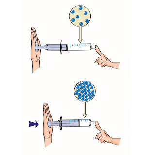

Composição da Matéria e a Indústria Metalúrgica

Massa: É uma propriedade relacionada com a quantidade de matéria e é medida geralmente em quilogramas. A massa é a medida da inércia. Quanto maior a massa de um corpo, maior a sua inércia. Massa e peso são duas coisas diferentes. A massa de um corpo pode ser medida em uma balança. O peso é uma força medida pelos dinamômetros.
Extensão: Toda matéria ocupa um lugar no espaço. Todo corpo tem extensão. Seu corpo, por exemplo, tem a extensão do espaço que você ocupa.
Impenetrabilidade: Duas porções de matéria não podem ocupar o mesmo lugar ao mesmo tempo. Comprove a impenetrabilidade da matéria: ponha água em um copo e marque o nível da água com esparadrapo. Em seguida, adicione três colheres de sal. Resultado: o nível da água subiu. Isto significa que duas porções de matéria (água e sal), não podem ocupar o mesmo lugar no espaço (interior do copo) ao mesmo tempo.
Compressibilidade: Quando a matéria está sofrendo a ação de uma força, seu volume diminui. Veja o caso do ar dentro da seringa: ele se comprime.
Elasticidade: A matéria volta ao volume e à forma iniciais quando cessa a compressão. No exemplo anterior, basta soltar o êmbolo da seringa que o ar volta ao volume e à forma iniciais.
Divisibilidade: A matéria pode ser dividida em partes cada vez menores. Quebre um pedaço de giz até reduzi-lo a pó. Quantas vezes você dividiu o giz?

Descontinuidade: Toda matéria é descontínua, por mais compacta que pareça. Existem espaços entre uma molécula e outra e esses espaços podem ser maiores ou menores tornando a matéria mais ou menos dura.

Matéria prima e indústria metalúrgica
Ao nosso redor existem inúmeros objetos feitos de ferro, aço ou alguma outra liga metálica que contenha ferro. Por isso, é pouco provável que alguém não saiba que metal é esse. Porém, o ferro não é encontrado na sua forma metálica isolada, livre na natureza, mas sim na forma de seus minérios. Os principais minérios de ferro são: Hematita (Fe 2 O 3 ); Magnetita (Fe 3 O 4 ); Siderita (FeCO 3 ); Limonita (Fe 2 O 3 .H 2 O); Pirita (FeS 2 ). Através dos minérios existentes na natureza é possível obter os mais diversos metais, tais como a prata, o mercúrio, o cobre, o chumbo e o zinco. A metalurgia é a área que estuda essas transformações. Um dos ramos da metalurgia é a siderurgia (do grego “trabalho feito sobre o ferro”), que estuda as formas de obtenção do ferro e do aço a partir de seus minérios, sendo que a mais utilizada é a hematita. Fonte: https://mundoeducacao.bol.uol.com.br/quimica/obtencao- ferro.htm

O ferro, como o alumínio e o cobre, apresenta características (propriedades) bem peculiares: é pouco maleável, tem densidade de 7,86g/cm3, e é pouquíssimo resistente à corrosão. Contudo, graças à interferência do homem, o ferro se tornou um metal bastante versátil - e, a partir dele, podemos confeccionar, por exemplo, panelas, portões, carcaças de máquinas e, principalmente, a liga de aço.
Fonte: https://educacao.uol.com.br/disciplinas/quimica/ferro-ocorrencia-obtencao-industrial-propriedades-e-utilizacao.htm1) O que é matéria? Explique.
2) Analise o gráfico abaixo sobre transformação de estado da matéria (H20) e responda as questões:

a) Qual a temperatura da água no início do experimento?
b) Durante quantos minutos só havia água líquida mesmo contendo cristais de gelo ?
c) A partir de quanto tempo a água ficou totalmente sólida?
3) Quais as principais matérias primas usadas na indústria metalúrgica?
4) Indique as características do metal Ferro (Fe) e diga quais suas aplicações na indústria metalúrgica: